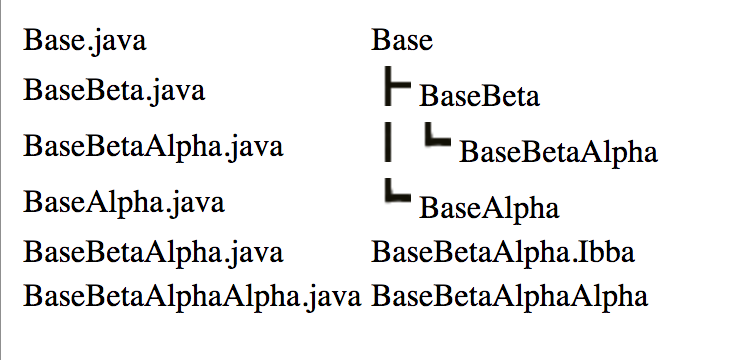
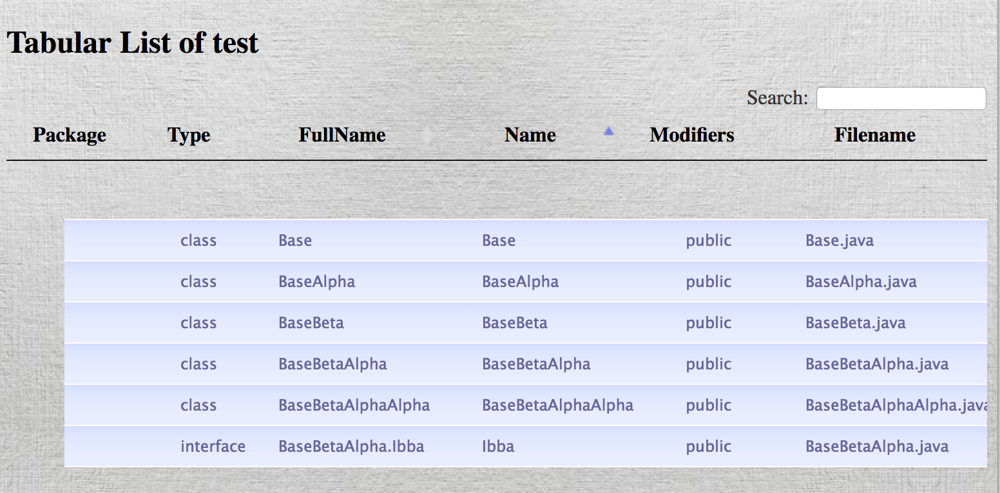
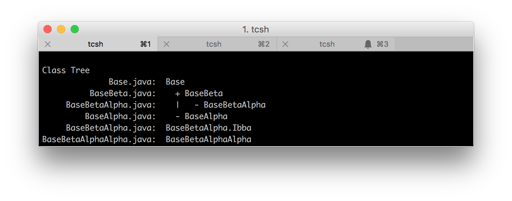
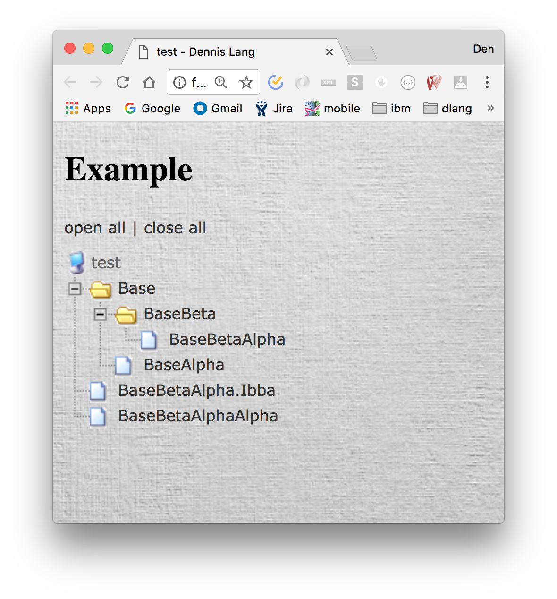
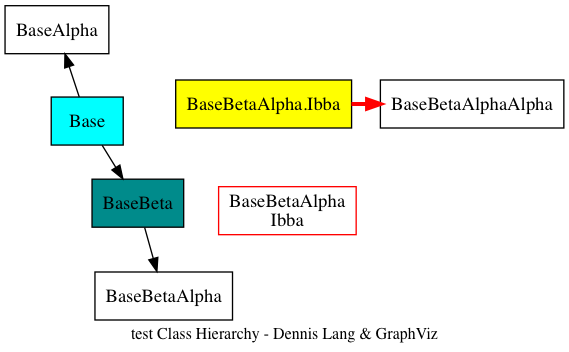

WebSite http://landenlabs.com
javatree (v1.4) Des: Generate Java class dependence tree (Dec 30 2017) Use: Javatree [-+ntgxshjz] header_files...Switches (*=default)(-=off, +=on): n ; Show alphabetic class name list * t ; Show class dependency tree
Output format (single choice): * g ; Use graphics for tree connections x ; Use (+|-) for tree connections s ; Use spaces for tree connections h ; Html tree connections j ; Java tree connections z ; GraphViz
Modifiers: Z ; Split GraphViz by tree, use with -O N=nodesPerFile ; Split by nodes per file, use with -O O=outpath ; Save output in file T=tabular ; Tabular html V=filePattern ; Ignore files A=allClasses ; Defaults to public F=full path ; Defaults to relative
Examples (assumes java source code in directory src): javatree -t +n src\*.java ; *.java prevent recursion javatree -x src > javaTree.txt javatree -h src > javaTree.html javatree -h -T src > javaTable.html javatree -j src > javaTreeWithJs.html
-V is case sensitive javatree -z -Z -O=.\viz\ -V=*Test* -V=*Exception* src >directgraph.dot javatree -z -N=10 -O=.\viz\ -V=*Test* -V=*Exception* src >directgraph.dot
#!/bin/csh -f # # Generate test reports # javatree test > reports/windows.txt javatree -h test > reports/html.html javatree -h -T test > reports/tabular.html javatree -x test > reports/text.txt javatree -t +n test > reports/list.txt javatree -j test > reports/tree.html javatree -z test > reports/directgraph.dot
javatree -h test > reports/html.html 
javatree -h -T test > reports/tabular.html 
javatree -x test > reports/text.txt 
javatree -t +n test > reports/list.txt
javatree -j test > reports/tree.html 
javatree -z test > reports/directgraph.dot
neato -Tpng reports/directgraph.dot > images/directgraph.png
